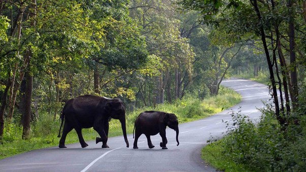

Wayanad
Nature's Abode"
>
Replete with waterfalls, historical caves, comfortable resorts and homestays, Wayanad in Kerala is famous for its spice plantations and wildlife. Walking through the sprawling spice plantations, trekking to the pre-historic caves and experiencing a resort holiday are one of the many things you can do to get a taste of Wayanad.
Wayanad is best known for the wildlife reserves - Wayanad wildlife reserve which is home to an exquisite variety of flora and fauna. Wayanad wildlife reserve is an integral part of the Nilgiri biosphere reserve peacefully located amidst the serene hills of Western Ghats. Wayanad homes a wide variety of wildlife like elephants, leopards, and bears. Wayanad is a perfect weekend idea from the cities of South India. If taking a road trip from Bangalore, you will drive through three national parks: Nagarhole, Bandipur and Mudumalai.